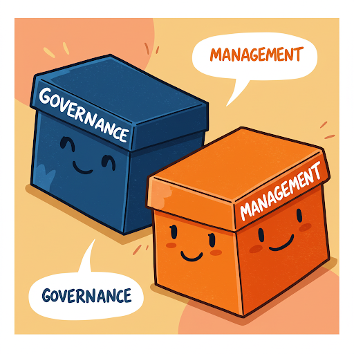
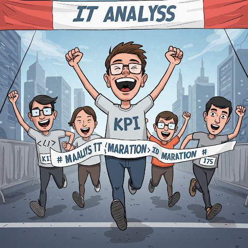

Anotações de Aula 4 COBIT - Objetivos de controle para tecnologias de informação e relacionadas
COBIT (Control Objectives for Information and Related Technologies) é uma estrutura de governança e gestão de TIC. Ela foi desenvolvida pela ISACA (Information Systems Audit and Control Association) e é usada para orientar as empresas na implementação de TIC.
O termo “Objetivos de Controle” remete a idéia de “métricas” para qualificar e dimensionar o uso da infraestrutura de TIC disponível. Então de alguma forma vamos ter que mensurar todos os processos como veremos mais adiante.
4.0.1 Governaça de TIC versus Gestão de TIC
Muito se confunde governança de TIC com gestão de TIC. Vamos ver como o COBIT versão 5 diferencia esses dois termos:
| GOVERNANÇA DE TIC: Conjunto de práticas e processos que asseguram que a TI apoia eficazmente os objetivos e as estratégias da organização, gere valor a partir dos investimentos em TI, gerencie os riscos relacionados à TI e otimize a utilização dos recursos e capacidades de TI. | |
| GESTÃO DE TIC: uso ponderado de recursos (pessoas, processos, práticas, etc.) para atingir determinados objetivos relacionados à tecnologia da informação, sendo responsável pela execução da orientação definida pelo órgão de governança. A gestão de TI diz respeito ao alinhamento das atividades de planejamento, desenvolvimento, organização e controle operacional com a orientação definida pelo órgão de governança, e à geração de relatórios sobre essas atividades. |
Colocando de forma bem simplista, enquanto a Governança de TIC cria Processos e Políticas de TI alinhadas aos objetivos da empresa, a Gestão de TIC aplica os recursos disponíveis de TIC de forma inteligente.
4.0.2 Os 5 Princípios do COBIT
O modelo COBIT 5 é baseado em cinco princípios básicos para a governança e gestão de TI da organização. Estes princípios são:
4.0.2.1 1º Princípio: Atender às Necessidades das Partes Interessadas
As organizações existem para criar valor para suas Partes interessadas, mantendo o equilíbrio entre a realização de benefícios e a otimização do risco e uso dos recursos. O COBIT 5 fornece todos os processos necessários e demais habilitadores para apoiar a criação de valor para a organização com o uso de TI. Cada organização pode personalizar o COBIT 5 de acordo com seu contexto específico por meio da cascata de objetivos, traduzindo objetivos corporativos de alto nível em objetivos de TI específicos e gerenciáveis, que são então mapeados em práticas e processos específicos.
4.0.2.2 2º Princípio: Cobrir a Organização de Ponta a Ponta

O COBIT 5 integra a governança corporativa de TI à governança corporativa:
| Processos de Negócio x Processos de TIC | Cobre todas as funções e processos corporativos, considerando a tecnologia da informação e tecnologias relacionadas como ativos que devem ser tratados como qualquer outro ativo por todos na organização |
| Alinamento de Gestores e Fornecedores | Considera todos os habilitadores de governança e gestão de TI aplicáveis em toda a organização, de ponta a ponta, incluindo tudo e todos - interna e externamente - que forem considerados relevantes para a governança e gestão das informações e de TI da organização |
4.0.2.3 3º Princípio: Aplicar Um Modelo Único Integrado

Existem muitas normas e boas práticas relacionadas a TI, cada qual fornecendo orientações para um conjunto específico de atividades de TI. O COBIT 5 se alinha a outros padrões e modelos importantes em um alto nível e, portanto, pode servir como um modelo unificado para a governança e gestão de TI da organização.
4.0.2.4 4º Princípio: Permitir uma Abordagem Holística
Uma governança e gestão eficiente e eficaz de TI da organização requer uma abordagem holística, levando em conta seus diversos componentes interligados. O COBIT 5 define um conjunto de sete categorias de habilitadores para apoiar a implementação de um sistema abrangente de gestão e governança de TI da organização.
| Item | Princípios, Políticas e Modelos |
|---|---|
| 01 | Processos |
| 02 | Estruturas Organizacionais |
| 03 | Cultura, Ética e Comportamento |
| 04 | Informação |
| 05 | Serviços, Infraestrutura e Aplicativos |
| 06 | Pessoas, Habilidades e Competências |
4.0.2.5 5º Princípio: Distinguir a Governança da Gestão

O modelo do COBIT 5 faz uma clara distinção entre governança e gestão. Essas duas disciplinas compreendem diferentes tipos de atividades, exigem modelos organizacionais diferenciados e servem a propósitos diferentes. A governança garante que as necessidades, condições e opções das Partes Interessadas sejam avaliadas a fim de determinar objetivos corporativos acordados e equilibrados; definindo a direção através de priorizações e tomadas de decisão; e monitorando o desempenho e a conformidade com a direção e os objetivos estabelecidos.
4.1 Cobit Aferição de Performance
4.1.1 KPI - indicadores-chave de desempenho

KPIs (Key Performance Indicator) ou indicadores-chave de desempenho são definidos como uma métrica quantificável usada para monitorar o progresso na realização dos objetivos comerciais. Mais especificamente, um KPI fornece informações sobre o desempenho do ativo mais importante de uma organização: as pessoas.

Os KPIs são considerados o molho secreto da estratégia empresarial moderna, e todos estão qualificados para utilizá-los. Indicadores-chave de desempenho eficazes permitem que as pessoas tomem decisões precisas e rápidas.
| KPIs bem projetados podem capacitar as equipes a resolver ineficiências, eliminar solicitações que consomem muito tempo e alinhar tarefas e projetos com metas de toda a empresa. |
| As empresas devem se concentrar nas métricas que têm o maior impacto sobre sua sustentabilidade. Ao focar em projetos, ferramentas e sistemas que realmente fazem a diferença, as empresas constroem um roteiro para maximizar sua velocidade em direção ao crescimento da receita. |
| É crucial identificar as métricas de negócios diretamente relacionadas às metas de negócios. Diferentes áreas terão diferentes KPIs (vendas, produtos, finanças). É importante entender o que cada área quer alcançar e seus critérios de sucesso. Um KPI que não contribui para uma meta de negócios deve ser descartado. |
| Após identificar as métricas, elas devem ser organizadas em indicadores principais (de avanço) e indicadores secundários (de atraso). Os indicadores de avanço mostram se é necessário ajustar a estratégia para alcançar o resultado desejado, enquanto os indicadores de atraso determinam o desempenho dos processos em um período mais longo. |
| Os KPIs devem ser claros e específicos e compreensíveis por toda a empresa. |
| É recomendado colocar os KPIs em uma ferramenta remota para registrar e monitorar o progresso, pois relatórios em formatos tradicionais podem se tornar rapidamente desatualizados e menos acessíveis. O ClickUp é apresentado como uma ferramenta para essa finalidade, oferecendo dashboards personalizáveis. |
| Monitorar KPIs como uma equipe ajuda a definir critérios claros e mensuráveis para o sucesso, permitindo que as equipes trabalhem para atingir metas específicas e medir continuamente seu progresso, o que pode levar a maior envolvimento e motivação. |
| A seleção dos KPIs adequados dependerá do propósito, das metas e dos objetivos da equipe, bem como da análise do desempenho anterior e de fatores externos. |
| Se uma equipe não estiver atingindo as metas de KPI, é importante identificar a causa raiz do problema e garantir que os KPIs sejam alcançáveis, relevantes e realistas. |
4.1.2 Exemplos de KPIs
4.1.2.1 Performance de Vendas
Indicadores de performance para o departamento de vendas;
| KPI | Descrição |
|---|---|
| Custo de aquisição de clientes | O custo total de aquisição de um cliente (inclui custos gastos no processo de vendas e por meio de esforços de marketing). |
| Atividades de vendas por representante | O número total de tarefas concluídas em um determinado período de tempo. |
| Taxa de conversão de leads em clientes | A porcentagem de leads convertidos em seu processo de vendas. |
| Receita total de vendas | A receita total gerada por seus produtos em um período definido. |
4.1.2.2 Performance de Operações de um setor
Indicadores de performance para uma operação de um departamento ou setor;
| KPI | Descrição |
|---|---|
| Duração do ciclo de vendas | O tempo médio que leva entre o contato inicial e o fechamento. |
| Horas extras | O número de horas trabalhadas por um funcionário além de suas horas de trabalho normalmente programadas. |
| Processos desenvolvidos | O número de melhorias feitas nas operações atuais. |
| Custos de inventário | O valor total de todas as despesas relacionadas ao armazenamento de mercadorias não vendidas. |
| Utilização do espaço de escritório | A porcentagem do espaço de escritório usado pelos funcionários. |
| Uso de vantagens da empresa | A porcentagem de vantagens usadas pelos funcionários. |
4.1.2.3 Performance financeira da empresa
Indicadores de performance para setor financeiro da empresa;
| KPI | Descrição |
|---|---|
| Retorno sobre o patrimônio líquido | A medida de desempenho financeiro com base no lucro líquido dividido pelo patrimônio líquido. |
| Margem de lucro líquido | A quantidade de dinheiro que sua empresa tem após todas as despesas terem sido deduzidas da receita total. |
| Custo dos produtos vendidos | O custo total de fabricação dos produtos que uma empresa vende (exclui despesas com vendas, administração e marketing). |
| Índice de dívida para patrimônio líquido | A proporção do total de passivos da empresa em relação ao patrimônio líquido. |
| Fluxo de caixa livre | A quantidade de dinheiro restante após as despesas de capital. |
4.1.2.4 Performance de um website
Indicadores de performance para interações em um website;
| KPI | Descrição |
|---|---|
| Proporção de tráfego para MQL | A proporção entre a plataforma de tráfego total gerada e o número de leads qualificados para marketing provenientes desse tráfego. |
| Erros de rastreamento | O número de URLs que são inacessíveis para o Googlebot quando ele examina suas páginas. |
| Taxa de rejeição | O número de pessoas que saíram de seu site em apenas alguns segundos após a chegada. |
| Usabilidade móvel | A velocidade e o desempenho da sua página de destino em telefones e guias. |
| Tráfego de referência | O número de pessoas que visitam seu site a partir de suas mídias sociais. |
4.1.2.5 Performance de inicialização de clientes
Indicadores de performance para início de relacionamento com clientes;
| KPI | Descrição |
|---|---|
| Valor da vida útil do cliente | A receita que sua empresa pode esperar de contas de clientes individuais. |
| Taxa de ativação | A porcentagem de usuários que concluem qualquer evento importante no processo de integração. |
| Runway | O número de meses que a empresa pode operar antes de ficar sem dinheiro. |
| Duração média do ciclo de vendas | O número de dias que leva para fechar um negócio, em média. |
| Burn mensal | O montante de dinheiro gasto por mês. |
4.1.2.6 Performance de inicialização de clientes
Indicadores de performance para início de relacionamento com clientes;
| KPI | Descrição |
|---|---|
| Valor da vida útil do cliente | A receita que sua empresa pode esperar de contas de clientes individuais. |
| Taxa de ativação | A porcentagem de usuários que concluem qualquer evento importante no processo de integração. |
| Runway | O número de meses que a empresa pode operar antes de ficar sem dinheiro. |
| Duração média do ciclo de vendas | O número de dias que leva para fechar um negócio, em média. |
| Burn mensal | O montante de dinheiro gasto por mês. |
4.1.2.7 Performance de Produtos
Indicadores de performance para Produtos;
| KPI | Descrição |
|---|---|
| Net Promoter Score (NPS) | O número que indica se seus usuários estão prontos para recomendar seu produto a amigos, colegas etc.. |
| Escalonamentos de tíquetes de suporte | O número de tíquetes transferidos para um gerente de suporte ao cliente de nível superior para serem resolvidos. |
| Índice de satisfação do cliente (CSAT) | A taxa de escala da experiência geral de um cliente com o produto, serviço ou funcionário de uma empresa. |
| Velocidade | O número total de testes manuais e automatizados realizados. |
| Daily Active User | O número de usuários ativos por dia. |
4.2 Exercícios de Fixação
4.2.1 Testes de múltipla escolha
| TESTE 01 |
|---|
| De acordo com a distinção feita pelo COBIT 5, qual das alternativas abaixo descreve corretamente as responsabilidades principais da Governança de TIC? |
| A) Uso ponderado de recursos (pessoas, processos, práticas, etc.) para atingir determinados objetivos relacionados à tecnologia da informação. |
| B) Alinhamento das atividades de planejamento, desenvolvimento, organização e controle operacional com a orientação definida e a geração de relatórios sobre essas atividades. |
| C) Garantir que as necessidades, condições e opções das Partes Interessadas sejam avaliadas, definindo a direção através de priorizações e tomadas de decisão, e monitorando o desempenho e a conformidade com a direção e os objetivos estabelecidos. |
| D) Execução da orientação definida pelo órgão de governança, aplicando os recursos disponíveis de TIC de forma inteligente. |
| E) Controle operacional dos serviços de TI, sejam internos ou externos, e garantia de que a estratégia de negócios seja suportada de maneira controlada. |
| TESTE 02 |
|---|
| Um dos principais objetivos do COBIT é oferecer um framework abrangente que auxilia as organizações a otimizar o valor gerado pela TI. Conforme as fontes, quais são outros objetivos principais do COBIT? |
| A) Descrever melhores práticas para gerenciamento de serviços de TI, focando na manutenção e operação da Infraestrutura de TI e no gerenciamento de incidentes e problemas,. |
| B) Permitir que a TI seja governada e gerenciada de forma holística para toda a organização e criar uma linguagem comum entre TI e negócios para a governança e gestão de TI corporativa. |
| C) Fornecer gerenciamento da TI com maior controle sobre os Ativos de TI (IC’s) da organização e criar e manter uma Base de Dados do Gerenciamento da Configuração (BDGC). |
| D) Definir critérios claros e mensuráveis para o sucesso, permitindo que as equipes trabalhem para atingir metas específicas enquanto medem continuamente seu progresso. |
| E) Identificar pontos fracos e desencadeadores para criar um desejo de mudança nos níveis de gestão executiva, definindo o escopo da implementação. |
| TESTE 03 |
|---|
| O COBIT 5 é baseado em cinco princípios básicos para a governança e gestão de TI. O Quarto Princípio é “Permitir uma Abordagem Holística”,. De acordo com as fontes, o que este princípio envolve? |
| A) Integrar a governança corporativa de TI à governança corporativa, cobrindo todas as funções e processos corporativos, e considerando a TI como ativo a ser tratado por todos na organização. |
| B) Assegurar que as necessidades, condições e opções das Partes Interessadas sejam avaliadas a fim de determinar objetivos corporativos acordados e equilibrados. |
| C) Levar em conta diversos componentes interligados (habilitadores) para uma governança e gestão eficiente e eficaz de TI da organização, definindo sete categorias de habilitadores. |
| D) Alinhar-se a outros padrões e modelos importantes em um alto nível, servindo como um modelo unificado para a governança e gestão de TI da organização. |
| E) Fazer uma clara distinção entre governança e gestão, compreendendo diferentes tipos de atividades, modelos organizacionais diferenciados e propósitos diferentes. |
| TESTE 04 |
|---|
| Conforme descrito nas fontes, qual é um dos propósitos fundamentais dos indicadores-chave de desempenho (KPIs) eficazes? |
| A) Servir como métricas quantitativas para relatórios diários de status de projetos. |
| B) Permitir que as pessoas tomem decisões precisas e rápidas. |
| C) Determinar quão bem os processos e atualizações são realizados em um período de tempo mais curto para ajustes imediatos. |
| D) Substituir a necessidade de um Banco de Dados de Gerenciamento da Configuração (CMDB) para controle de ativos de TI. |
| E) Focar exclusivamente em indicadores de atraso para determinar o desempenho dos processos em um período mais longo. |
| TESTE 05 |
|---|
| As fontes mencionam a organização de métricas em duas categorias de indicadores-chave de desempenho. Quais são essas categorias e suas características principais? |
| A) Indicadores Internos e Externos: Medem o desempenho dentro da organização e em relação ao mercado. |
| B) Indicadores de Curto Prazo e Longo Prazo: Medem resultados imediatos e resultados acumulados ao longo do tempo. |
| C) Indicadores Financeiros e Não Financeiros: Medem o impacto na receita/custos e em outros aspectos como satisfação do cliente ou produtividade. |
| D) Indicadores Principais (de Avanço) e Indicadores Secundários (de Atraso): Os de avanço indicam a necessidade de ajustar a estratégia, enquanto os de atraso determinam o desempenho em um período mais longo. |
| E) Indicadores SMART e Não SMART: Indicadores que são específicos, mensuráveis, acionáveis, pertinentes e tempestivos versus aqueles que não são. |
| TESTE 06 |
|---|
| O princípio do COBIT 5 “Permitir uma Abordagem Holística”, define um conjunto de sete categorias de habilitadores,, para apoiar a implementação de um sistema abrangente de governança e gestão de TI,. Qual das alternativas abaixo apresenta uma dessas categorias de habilitadores? |
| A) Serviços, Infraestrutura e Aplicativos. |
| B) Domínio Avaliar, Dirigir e Monitorar (EDM). |
| C) Gerenciamento de Incidentes. |
| D) Gerenciamento da Continuidade de Serviços TIC. |
| E) Modelo de Capacidade de Processo. |